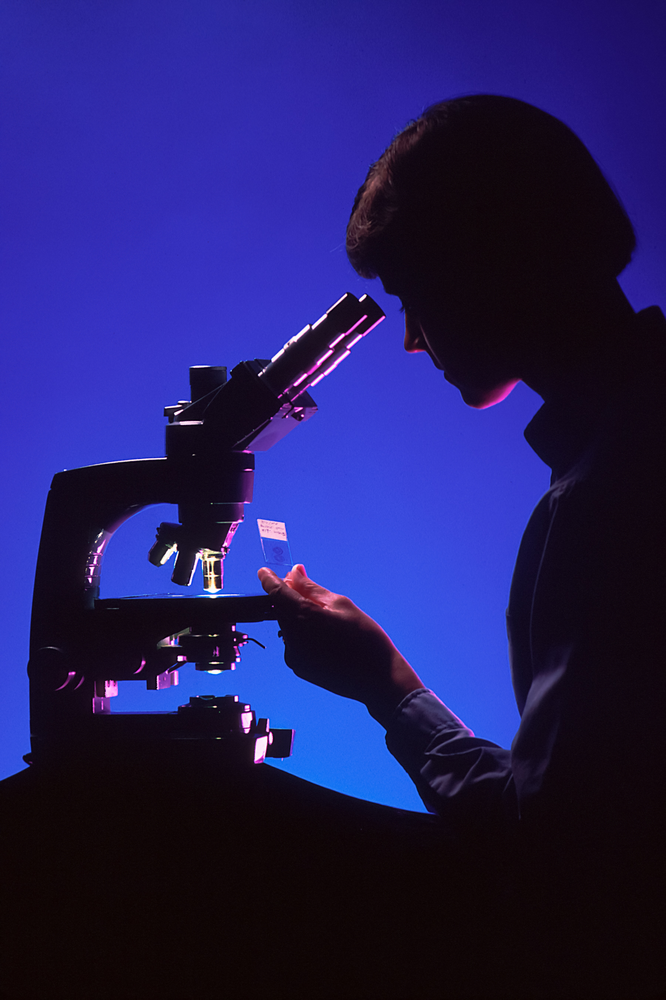

Analyzing COVID-19's Effects on Food Deserts in New York
Discover how I led a team of 5 data scientists to conduct original research using various data analytics tools. In this project, we sought to uncover how COVID-19 changed food deserts throughout the state of New York.

Using K-Means Clusterig to Create Better Canvassing Routes
Learn how I used an advanced data science technique to help Rural Organizing create an effective route planning solution for their volunteers, allowing them to better map their voter base.
Charmsea Logo
Charmsea is the brainchild of a creative jewelry that's looking to empower and inspire young girls to get their shine on!